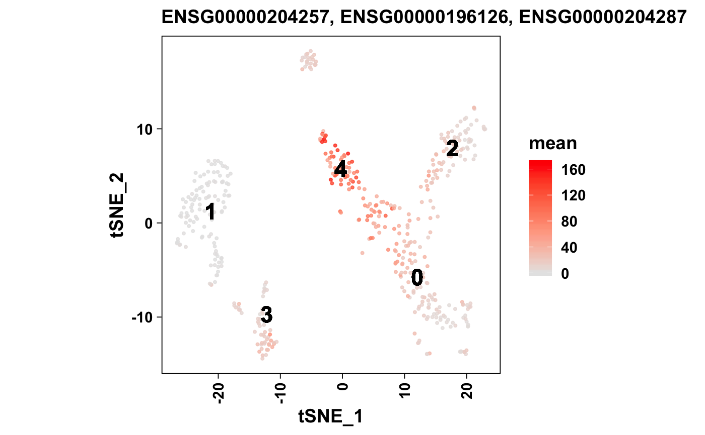

R/AllGenerics.R, R/methods-plotCellTypesPerCluster.R
plotCellTypesPerCluster.Rd
Plot the geometric mean of the significant marker genes for every known cell
type (per unbiased cluster). Cell types with too few (min cutoff) or too
many (max cutoff) marker genes will be skipped.
plotCellTypesPerCluster(object, ...) # S4 method for seurat plotCellTypesPerCluster(object, cellTypesPerCluster, color = scale_color_viridis(discrete = FALSE), dark = TRUE, headerLevel = 2L)
| object | Object. |
|---|---|
| ... | Additional arguments. |
| cellTypesPerCluster | Cell types per cluster |
| color | Desired ggplot color scale. Must supply discrete values. When
set to |
| dark | Plot against a dark background using |
| headerLevel | R Markdown header level. |
Show graphical output. Invisibly return ggplot list.
Other Clustering Functions: cellTypesPerCluster,
knownMarkersDetected,
plotFeatureTSNE,
plotKnownMarkersDetected,
plotMarkerTSNE, plotMarkers,
plotPCA, plotPCElbow,
plotTSNE, plotTopMarkers,
sanitizeMarkers, topMarkers
#> Observations: 1 #> Variables: 5 #> $ cluster <fct> 1 #> $ cellType <chr> "Natural Killer Cell" #> $ n <int> 1 #> $ geneID <chr> "ENSG00000149294" #> $ geneName <chr> "NCAM1"# Let's plot the first row, as an example plotCellTypesPerCluster( object = seurat_small, cellTypesPerCluster = per_cluster[1L, , drop = FALSE] )#> | | 0 % ~calculating #> #> ## Cluster 1 {.tabset} #> #> #> #> ### Natural Killer Cell {.tabset} #>#> |++++++++++++++++++++++++++++++++++++++++++++++++++| 100% elapsed = 01s